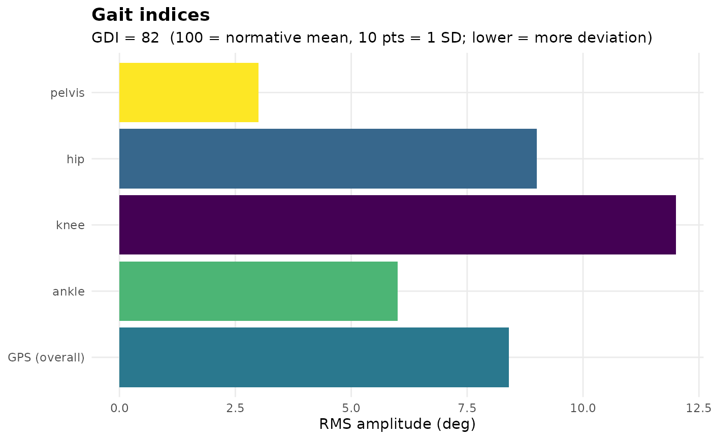

A single bar panel summarising the gait indices for a clinical gait report: one bar per Gait Variable Score (the Movement Analysis Profile) plus the overall Gait Profile Score, coloured by deviation magnitude, with the Gait Deviation Index reported in the subtitle (GDI 100 = normative mean, each 10 points is one standard deviation, lower = more deviation).
Arguments
- gdi
A
gait_deviation_index(fromPhysioMoCap::gaitDeviationIndex()) or a numeric GDI value. A named numeric vector (e.g.c(L = 82, R = 61)) reports a per-side GDI.- gps
A numeric Gait Profile Score, or a
movement_analysis_profile(its$gpsis used).- map
A
movement_analysis_profile(fromPhysioMoCap::movementAnalysisProfile()) or a named numeric vector of Gait Variable Scores.
Examples
# \donttest{
gaitIndexDashboard(gdi = 82,
gps = 8.4,
map = c(pelvis = 3, hip = 9, knee = 12, ankle = 6))

# }